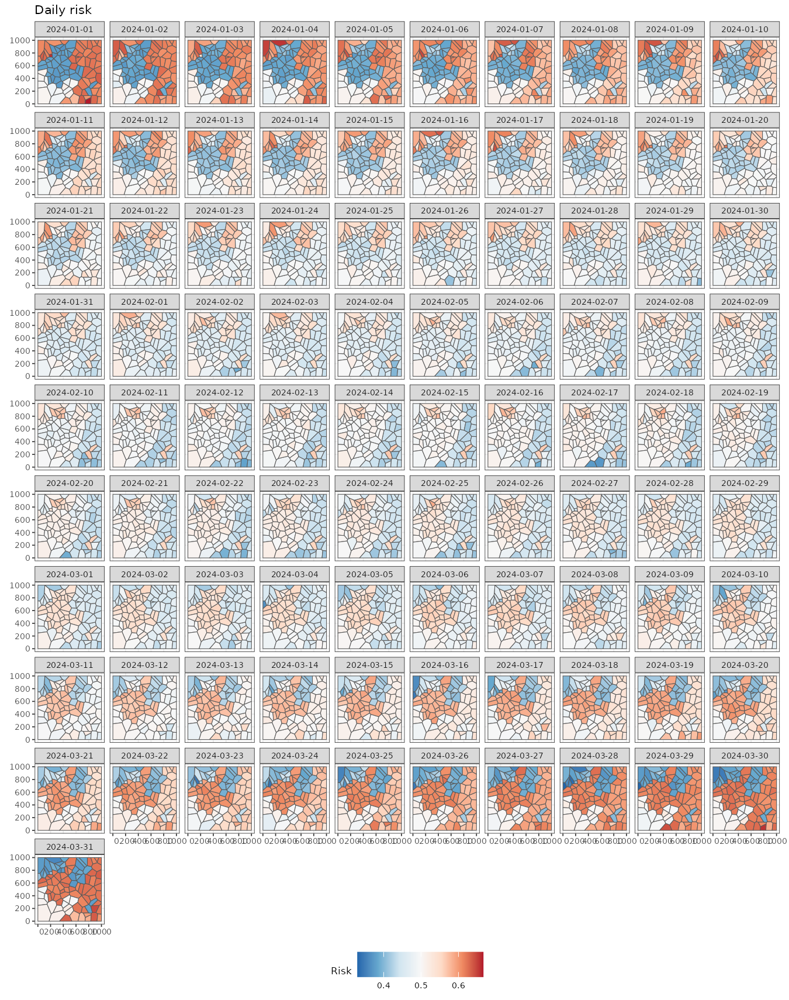
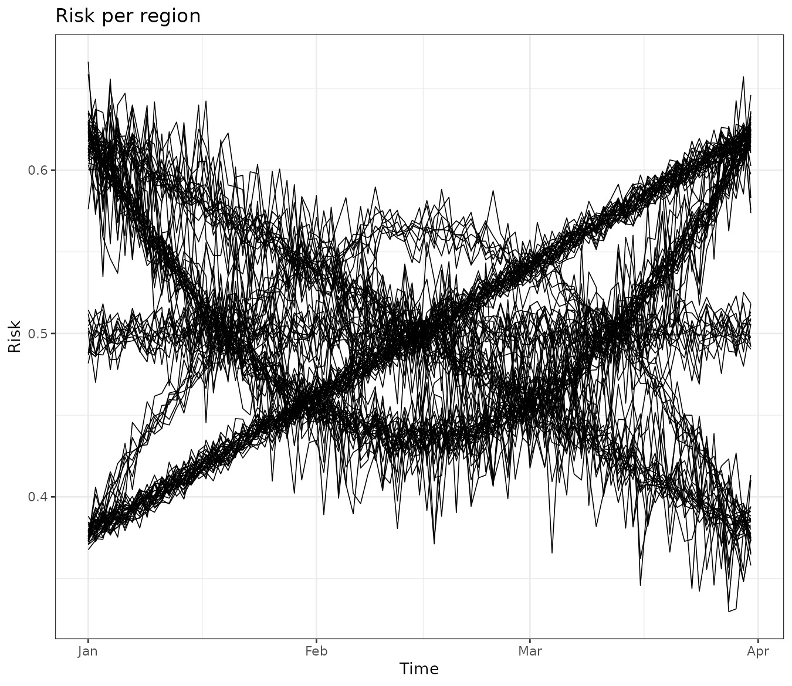
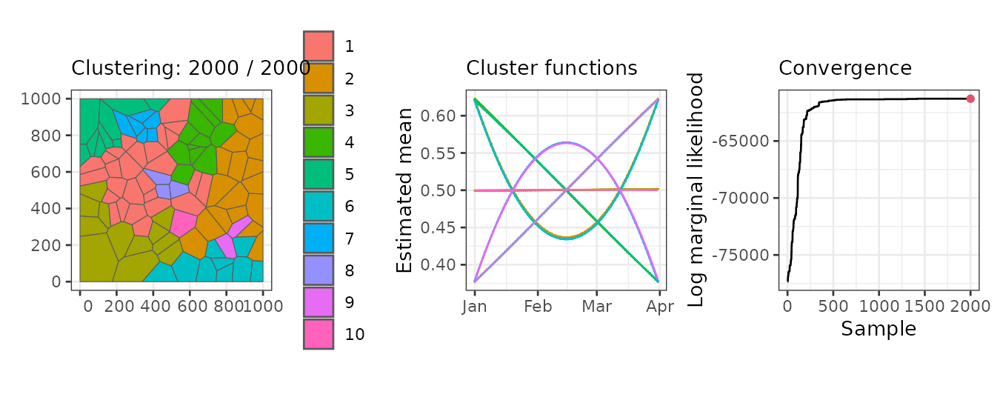
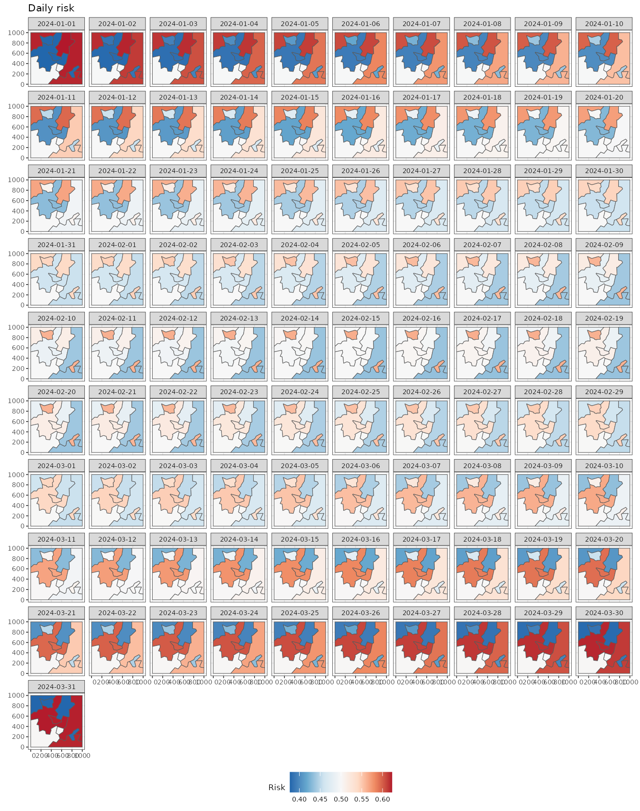
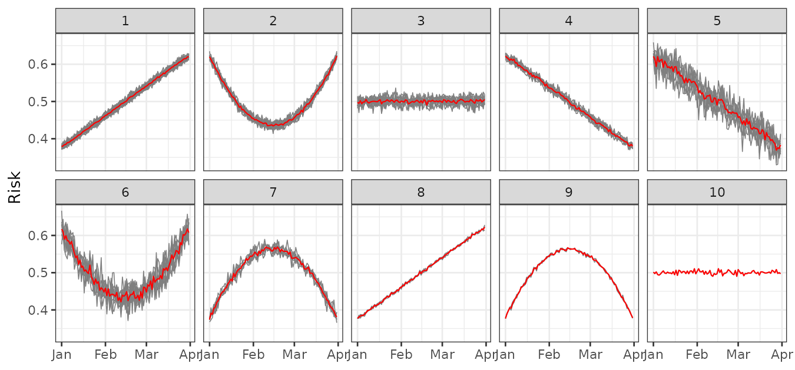

Introduction to sfclust
sfclust.RmdIn this vignette, we demonstrate the basic use of
sfclust for spatial clustering. Specifically, we focus on a
synthetic dataset of disease cases to identify regions with similar
disease risk over time.
Packages
We begin by loading the required packages. In particular, we load the
stars package as our sfclust package works
with spacio-temporal stars objects.
Data
The simulated dataset used in this vignette, stbinom, is
included in our package. It is a stars object with two
variables, cases and population, and two
dimensions, geometry and time. The dataset
represents the number of cases in 100 regions, observed daily over 91
days, starting in January 2024.
data("stbinom")We can easily visualize the spatio-temporal risk using
ggplot and stars::geom_stars. It shows some
neightboring regions with similar risk patterns over time.
ggplot() +
geom_stars(aes(fill = cases/population), data = stbinom) +
facet_wrap(~ time) +
scale_fill_distiller(palette = "RdBu") +
labs(title = "Daily risk", fill = "Risk") +
theme_bw(base_size = 7) +
theme(legend.position = "bottom")
We can aggregate the data for easier visualization using the
stars::aggregate function. The following figure displays
the weekly mean risk, providing initial insights. For This figure
displays the daily risk, providing initial insights. For example, the
northwestern regions show a higher risk at the beginning (2024-01-01),
followed by a decline by March 24. In contrast, a group of regions on
the eastern side exhibits high risk at both the beginning (2024-01-01)
and the end (2024-03-25) but lower values in the middle of the study
period (2024-02-12).
It is also useful to examine trends for each region. This can be done
by converting the stars object into a data frame using the
stars::as_tibble function. The visualization reveals that
some regions exhibit very similar trends over time. Our goal is to
cluster these regions while considering spatial contiguity.
stbinom |>
st_set_dimensions("geometry", values = 1:nrow(stbinom)) |>
as_tibble() |>
ggplot() +
geom_line(aes(time, cases/population, group = geometry), linewidth = 0.3) +
theme_bw() +
labs(title = "Risk per region", y = "Risk", x = "Time")
Clustering
Model
Our model-based approach to spatial clustering requires defining a within-cluster model, where regions within the same cluster share common parameters and latent functions. In this example, given the clustering or partition , we assume that the observed number of cases () for region at time is a realization of a Binomial random variable with size and success probability :
Based on our exploratory analysis, the success probability is modeled as: where is the intercept for cluster , and represents a set of polynomial functions of time that capture global trends with a cluster-specific effect . Additionally, we include an independent random effect, , to account for extra space-time variability.
Since we perform Bayesian inference, we impose prior distributions on the model parameters. The intercept and regression coefficients follow a Normal distribution, while the prior for the hyperparameter is defined as: Notably, all regions within the same cluster share the same parameters: , regression coefficients , and random-effect standard deviation .
Sampling with sfclust
In order to perform Bayesian spatial functional clustering with the
model above we use the main function sfclust. The main
arguments of this function are:
-
stdata: The spatio-temporal data which should be astarsobject. -
stnames: Names of the spatial and time dimensions respectively (default:c("geometry", "time")). -
niter: Number of iteration for the Markov chain Monte Carlo algorithm.
Notice that given that sfclust uses MCMC and INLA to
perform Bayesian inference, it accepts any argument of the
INLA::inla function. Some main arguments are:
-
formula: expression to define the model with fixed and random effects.sfclustpre-process the data and create identifiers for regionsids, timesidtand space-timeid. You can incluse these identifiers in your formula. -
family: distribution of the response variable. -
Ntrials: Number of trials in case of a Binomial response. -
E: Expected number of cases for a Poisson response.
The following code perform the Bayesian function clustering for the model explained above with 2000 iterations.
set.seed(7)
result <- sfclust(stbinom, formula = cases ~ poly(time, 2) + f(id),
family = "binomial", Ntrials = population, niter = 2000)
names(result)#> [1] "samples" "clust"The returning object is of class sfclust, which is a
list of two elements:
-
samples: list containing themembershipsamples, the logarithm of the marginal likelihoodlog_mlikeand the clustering movementsmove_countsdone in total. -
clust: list containing the selectingmembershipfromsamples. This include theidof selected sample, the selectedmembershipand themodelsassociated to each cluster.
Basic methods
By default, the sfclust object prints the within-cluster
model, the clustering hyperparameters, the movements counts, and the
current log marginal likelihood.
result#> Within-cluster formula:
#> cases ~ poly(time, 2) + f(id)
#>
#> Clustering hyperparameters:
#> log(1-q) birth death change hyper
#> -0.6931472 0.4250000 0.4250000 0.1000000 0.0500000
#>
#> Clustering movement counts:
#> births deaths changes hypers
#> 60 60 17 90
#>
#> Log marginal likelihood (sample 2000 out of 2000): -61286.28The output indicates that the within-cluster model is specified using
the formula cases ~ poly(time, 2) + f(id), which is
compatible with INLA. This formula includes polynomial fixed effects and
an independent random effect per observation.
The displayed hyperparameters are used in the clustering algorithm.
The hyperparameter log(1-q) = 0.5 penalizes the increase of
clusters, while the other parameters control the probabilities of
different clustering movements:
- The probability of splitting a cluster is 0.425.
- The probability of merging two clusters is 0.425.
- The probability of simultaneously splitting and merging two clusters is 0.1.
- The probability of modifying the minimum spanning tree is 0.05.
Users can modify these hyperparameters as needed. The output also displays clustering movements. The output summary indicates the following:
- Clusters were splited 60 times.
- Clusters were merged 60 times.
- Clusters were simultaneously split and merged 17 times.
- The minimum spanning tree was updated 90 times.
Finally, the log marginal likelihood for the last iteration (2000) is reported as -61,286.28.
Plot
The plot method generates three main graphs:
- A map of the regions colored by clusters.
- The mean function per cluster.
- The marginal likelihood for each iteration.
In our example, the left panel displays the regions grouped into the 10 clusters found in the 2000th (final) iteration. The middle panel shows the mean linear predictor curves for each cluster. Some clusters exhibit linear trends, while others follow quadratic trends. Although some clusters have similar mean trends, they are classified separately due to differences in other parameters, such as the variance of the random effects.
Finally, the right panel presents the marginal likelihood for each iteration. The values stabilize around iteration 1500, indicating that any clustering beyond this point can be considered a reasonable realization of the clustering distribution.
plot(result, sort = TRUE, legend = TRUE)
Summary
Once convergence is observed in the clustering algorithm, we can
summarize the results. By default, the summary is based on the last
sample. The output of the summary method confirms that it
corresponds to the 2000th sample out of a total of 2000. It also
displays the model formula, similar to the print
method.
Additionally, the summary provides the number of members in each cluster. For example, in this case, Cluster 1 has 27 members, Cluster 2 has 12 members, and so on. Finally, it reports the associated log-marginal likelihood.
summary(result)#> Summary for clustering sample 2000 out of 2000
#>
#> Within-cluster formula:
#> cases ~ poly(time, 2) + f(id)
#>
#> Counts per cluster:
#> 1 2 3 4 5 6 7 8 9 10
#> 27 12 9 9 11 20 6 1 2 3
#>
#> Log marginal likelihood: -61286.28We can also summarize any other sample, such as the 500th iteration.
The output clearly indicates that the log-marginal likelihood is much
smaller in this case. Keep in mind that all other sfclust
methods use the last sample by default, but you can specify a different
sample if needed.
summary(result, sample = 500)#> Summary for clustering sample 500 out of 2000
#>
#> Within-cluster formula:
#> cases ~ poly(time, 2) + f(id)
#>
#> Counts per cluster:
#> 1 2 3 4 5 6 7 8 9 10 11 12 13 14 15
#> 26 12 9 8 11 4 16 1 5 1 2 1 2 1 1
#>
#> Log marginal likelihood: -61439.52Cluster labels are assigned arbitrarily, but they can be relabeled
based on the number of members using the option
sort = TRUE. The following output shows that, in the last
sample, the first seven clusters have more than four members, while the
last three clusters have fewer than four members.
summary(result, sort = TRUE)#> Summary for clustering sample 2000 out of 2000
#>
#> Within-cluster formula:
#> cases ~ poly(time, 2) + f(id)
#>
#> Counts per cluster:
#> 1 2 3 4 5 6 7 8 9 10
#> 27 20 12 11 9 9 6 3 2 1
#>
#> Log marginal likelihood: -61286.28Fitted values
We can obtain the estimated values for our model using the
fitted function, which returns a stars object
in the same format as the original data. It provides the mean, standard
deviation, quantiles, and other summary statistics.
pred <- fitted(result)
pred#> stars object with 2 dimensions and 5 attributes
#> attribute(s):
#> Min. 1st Qu. Median Mean 3rd Qu.
#> mean -0.7055731 -0.1988638 -0.0055543163 -0.0004677087 0.1850758
#> mean_inv 0.3305778 0.4504473 0.4986114245 0.4998542289 0.5461373
#> cluster 1.0000000 1.0000000 4.0000000000 3.8700000000 6.0000000
#> mean_cluster -0.5011533 -0.1986104 0.0001815312 -0.0004677297 0.1898616
#> mean_cluster_inv 0.3772697 0.4505100 0.5000453828 0.4998533938 0.5473233
#> Max.
#> mean 0.6887139
#> mean_inv 0.6656808
#> cluster 10.0000000
#> mean_cluster 0.5015424
#> mean_cluster_inv 0.6228217
#> dimension(s):
#> from to offset delta refsys point
#> geometry 1 100 NA NA NA FALSE
#> time 1 91 2024-01-01 1 days Date FALSE
#> values
#> geometry POLYGON ((59.5033 683.285...,...,POLYGON ((942.7562 116.89...
#> time NULLWe can easily visualize these fitted values. Note that there are still differences between regions within the same cluster due to the presence of random effects at the individual level.
ggplot() +
geom_stars(aes(fill = mean_inv), data = pred) +
facet_wrap(~ time) +
scale_fill_distiller(palette = "RdBu") +
labs(title = "Daily risk", fill = "Risk") +
theme_bw(base_size = 7) +
theme(legend.position = "bottom")To gain further insights, we can compute the mean fitted values per
cluster using aggregate = TRUE. This returns a
stars object with cluster-level geometries.
pred <- fitted(result, sort = TRUE, aggregate = TRUE)Using these estimates, we can visualize the cluster-level mean risk evolution over time.
ggplot() +
geom_stars(aes(fill = mean_cluster_inv), data = pred) +
facet_wrap(~ time) +
scale_fill_distiller(palette = "RdBu") +
labs(title = "Daily risk", fill = "Risk") +
theme_bw(base_size = 7) +
theme(legend.position = "bottom")
Finally, we can use our clustering results to visualize the original
data grouped by clusters using the function
plot_clusters_series(). As the output is a
ggplot object, then we can easily customize the output as
follows:
plot_clusters_series(result, cases/population, sort = TRUE) +
facet_wrap(~ cluster, ncol = 5) +
labs(y = "Risk")
Even though some clusters exhibit similar trends—for example, clusters 2 and 6—the variability between them differs, which justifies their classification as separate clusters.